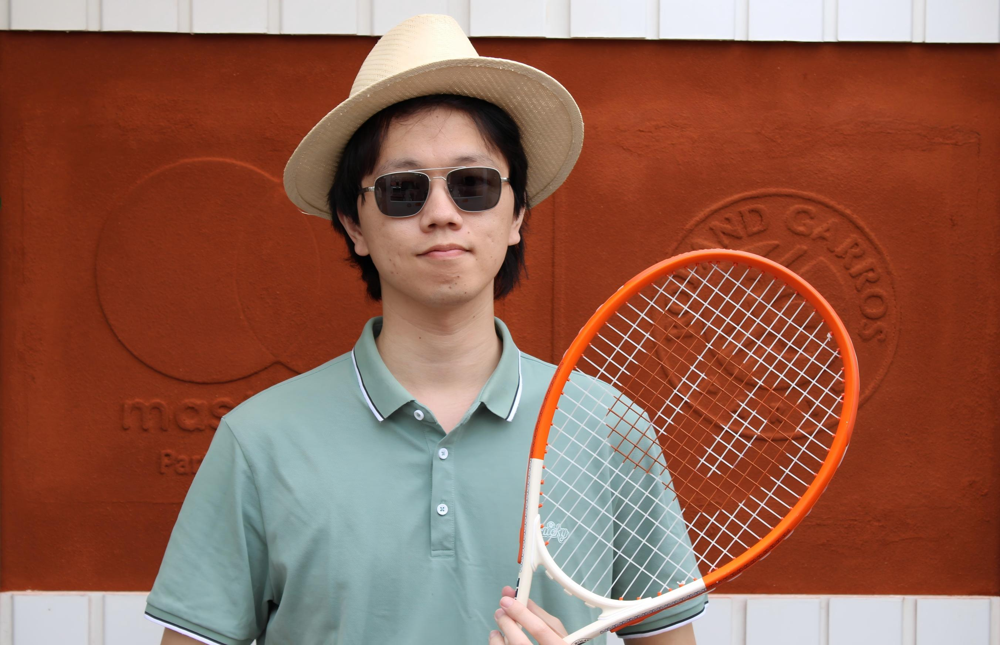

About me

I am currently a PhD student at Institut Camille Jordan, in Université Claude Bernard Lyon 1 (France), under the supervision of Petru Mironescu .
From September 2020 to July 2023, I was a master student at the School of Mathematical Sciences, in Beijing Normal University (China), under the supervision of Jingang Xiong . Before that, I studied at the same place and obtained my bachelor degree.